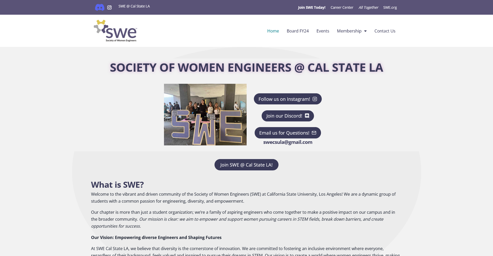

As the Web Manager for the FY 24 board of the Cal State LA chapter of the Society of Women Engineers, I made a new WordPress website for our chapter, as the old one was outdated and not functional anymore. This has helped greatly increase interest in the club and increase attendance at events.
Wordpress
For this project, I had the inspiration for our old website, which our club and advisor decided to scrap and completely redo. I decided to use the template by SWE, which was on WordPress, to make sure I would conform to the organization's design guidelines. It was crucial that the new website would be engaging and easily accessible to members and the community while also informing about events and workshops. It was important for the design to be accessible and recognized as part of SWE. Because WordPress didn’t have all the features I wanted to incorporate, I decided to add some custom HTML and CSS. Together with the faculty advisor, the SWE president, and the rest of the board, I revised the website and incorporated their ideas. While the website has officially launched. I am continuously checking for bugs, revising the website, and making changes.